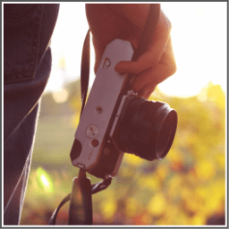

People who have the passion for photography.
Ability to take versatile and creative photos.
If you are an experienced photographer you can start almost instantly.
If you are new you might need time to learn photography. Learning time completely depends on how quickly you grasp the concepts.
There are many ways to earn a lot of money from photography, mentioning a few.
1. Sign up at the following websites, upload your photographs and start earning money once people start buying them.
2. Remember, creativity is really necessary for photography.
You will have to bring more professionalism and creativity in your photographs to start earning a good income.
Merely taking random photographs from your cell phone or a digital camera is not going to work here.
3. You can even start your own photography website and sell your photographs directly from there.